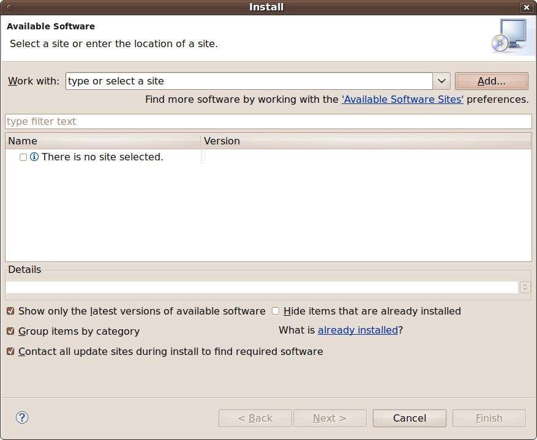
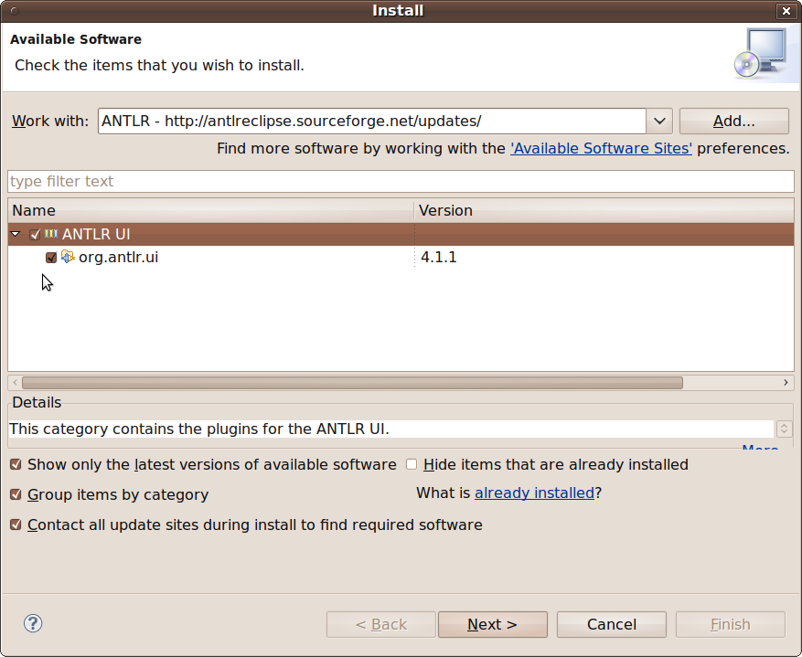

The setup for AGX described here uses Eclipse Galileo.
Make sure to have an appropriate Java-interpreter on your machine. Check out http://java.sun.com for details.
Download and the Galileo Eclipse Modeling Tools bundle from http://www.eclipse.org/downloads/packages/eclipse-modeling-tools-includes-incubating-components/galileosr2.
Unpack the downloaded ZIP or tarball to a location of choice. Eclipse should run if Java was installed correctly.
/eclipse/install/path/eclipse
Note for GTK Users (Gnome i.e.) - There is a bug in some versions of GTK that causes certain print backends to hang. Fix it by providing a 2-liner script as eclipse launcher.
#!/bin/sh
export GDK_NATIVE_WINDOWS=1
/eclipse/install/path/eclipse -vmargs -XX:+AggressiveHeap
On first startup, eclipse asks you for a workspace location. This is the location where eclipse projects are.
After defining the workspace eclipse welcome screen comes up. Go ahead for digging around a little bit or go directly to the workbench (icon on the right).
Open the Update Manager of Eclipse. It is at help -> install new Software....
Click the add button, give it name ANTLR, enter the ANTLR update site http://antlreclipse.sourceforge.net/updates/ as location and klick ok. Eclipse now fetches the Plug-In information from this location.
Select ANTLR UI, click next and follow the installation instructions. After installation you’ll be asked to restart Eclipse. Do it!
Eclipse Modeling Tools come along with facilities for drawing UML models. Anyway we’ll use Papyrus for modeling, it’s more handy than the shipped tools.
Repeat the installation procedure from above, this time using the Papyrus update site http://www.papyrusuml.org/home/liblocal/docs/updates/papyrus/ and select Papyrus modelling tools.
AGX Ships with an Eclipse plugin for invoking the generator out of the IDE. The update site for this plugin is at http://agx.me/updates/. Install it using the update manager.
PyDev is an Eclipse plugin for Python development and the choice if you decide to use Eclipse as your Python IDE.
Using it has the advantage of combining modeling, code generation and custom work on the generated stuff all in the same IDE - hurrah!.
The update site for Pydev is at http://pydev.org/updates/.
Aptana Studio is an IDE for building Web-applications and comes along with HTML, CSS and JavaScript tools and is is a pretty useful extension.
The update site for Aptana is located at http://download.aptana.org/tools/studio/plugin/install/studio.